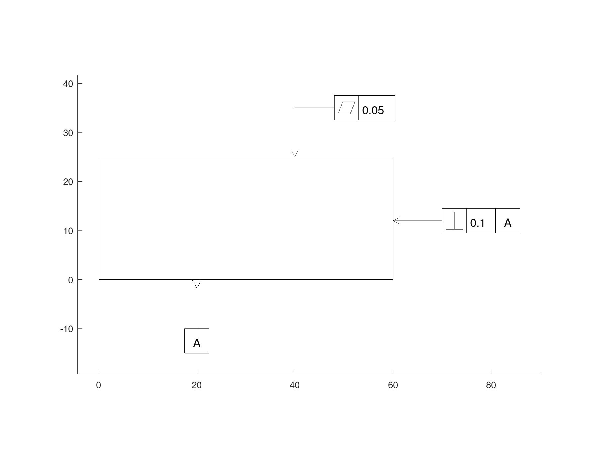
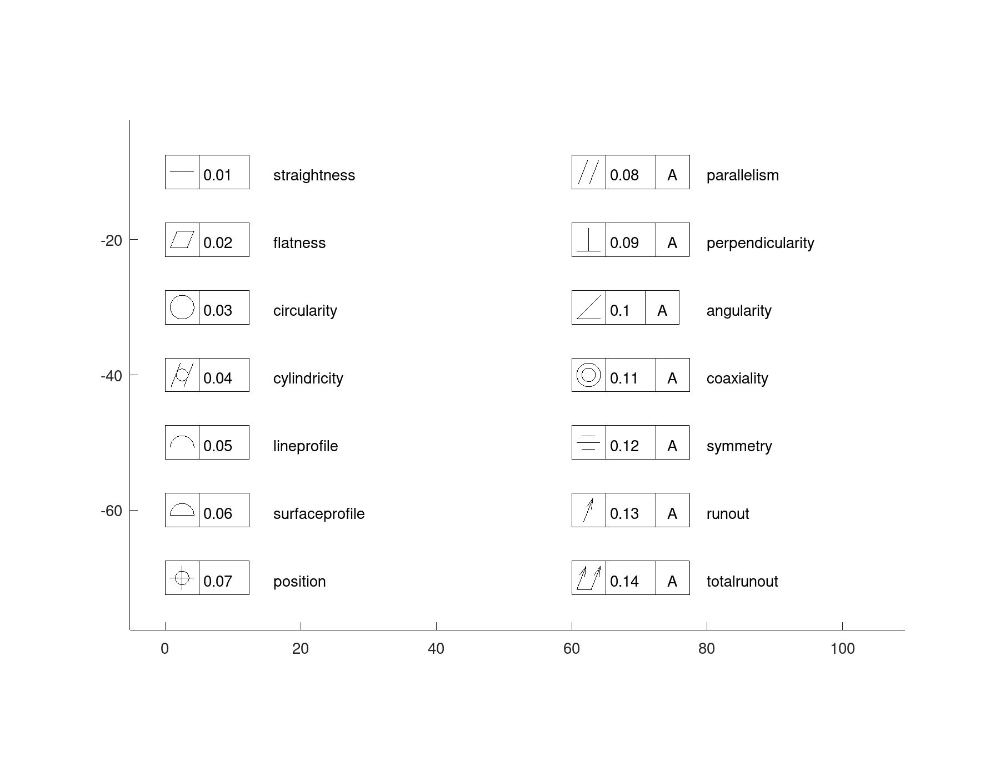
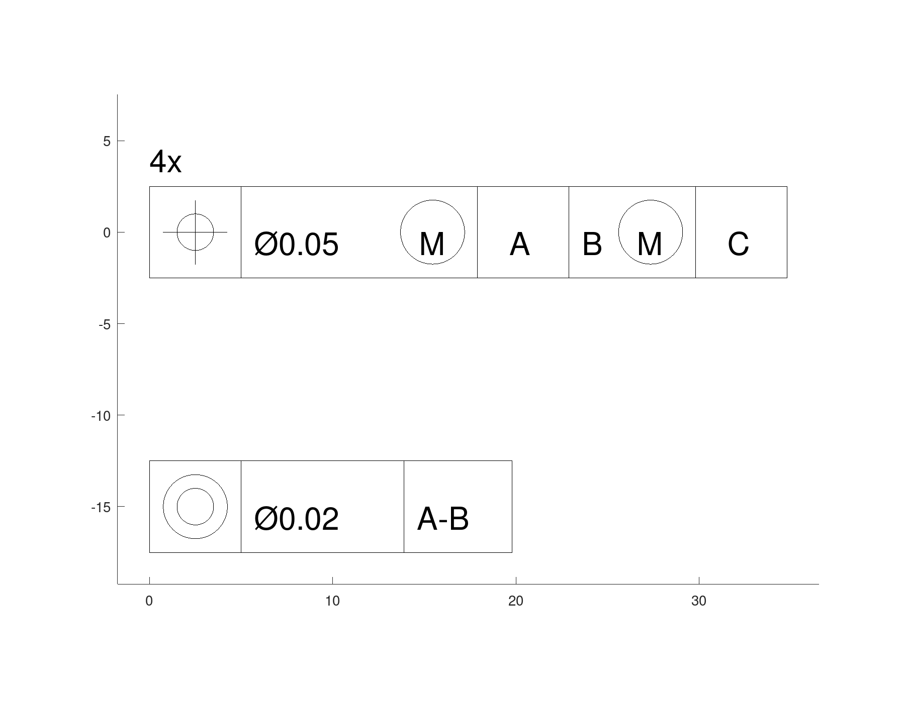
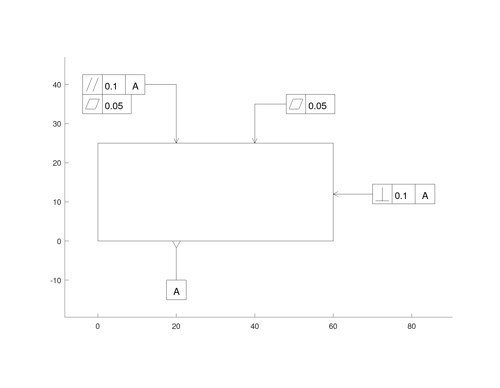
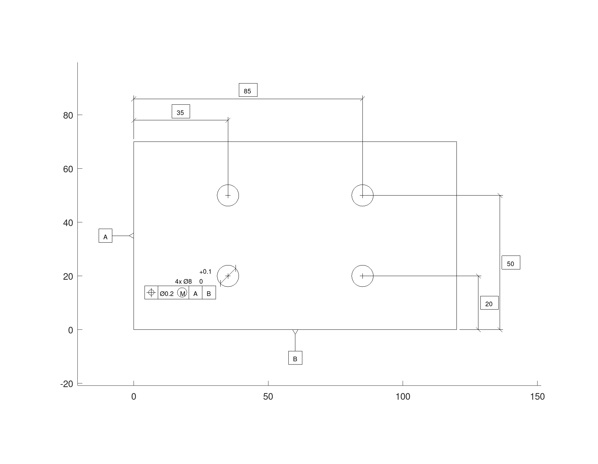
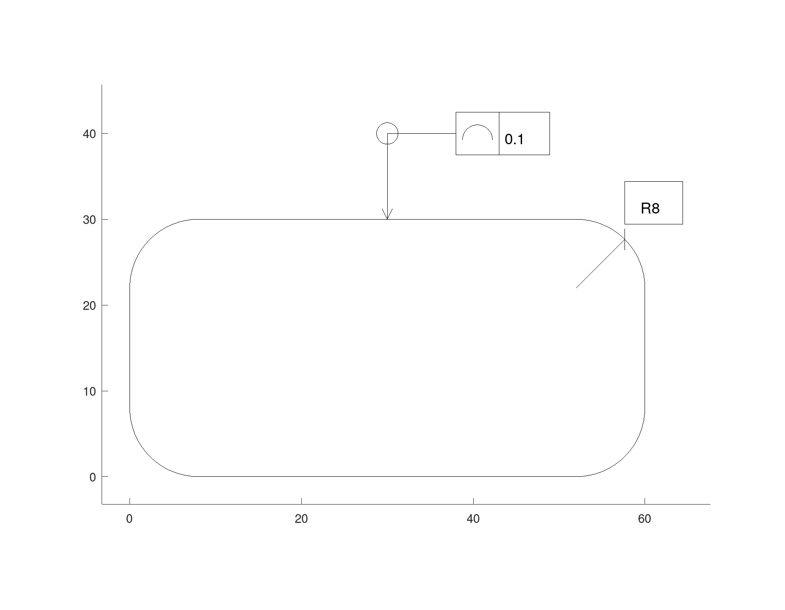

Tolerance frames and datums
A tolerance on a dimension limits a size. It says nothing about whether a face is flat, square to another, or where a hole stands. Those are geometrical tolerances, which ISO 1101 writes in tolerance frames. This page draws the frames, names the datums they are measured from, and gives the theoretically exact dimensions that place a tolerance zone.
A frame on a leader
tolframe draws a frame at the end of a leader from the feature it tolerates. The frame is a row of compartments: the symbol of the characteristic, the width of the tolerance zone in millimetres, and the datums, if any. Here the top face of a block may lie anywhere between two parallel planes 0.05 apart: it is flat to 0.05.
datum names a feature as a datum: a letter in a square, joined to a triangle standing on the feature. The bottom face is datum A, and the right face must be square to it within 0.1.
B = draw.Drawing ('block');
B = B.polyline (geom.Polyline ([0, 0; 60, 0; 60, 25; 0, 25], ...
'Closed', true));
B = B.tolframe ([40, 25; 40, 35; 48, 35], 'flatness', 0.05);
B = B.datum ([20, 0; 20, -10], 'A');
B = B.tolframe ([60, 12; 70, 12], 'perpendicularity', 0.1, ...
'Datums', {'A'});
plot (B, 'FontScale', 5);
The leader starts on the feature and ends where the frame stands, at the middle of whichever end of the frame faces it. A frame given a single point stands free, by the middle of its left end.
The fourteen characteristics
ISO 1101 has fourteen characteristics, each with its symbol, drawn here as lines and arcs and not taken from a font. Straightness, flatness, circularity and cylindricity tolerate the form of a single feature and take no datum. The orientations, coaxiality, symmetry and the run-outs relate one feature to another and need one. The profiles and position may have one or not.
names = {'straightness', 'flatness', 'circularity', 'cylindricity', ...
'lineprofile', 'surfaceprofile', 'position', ...
'parallelism', 'perpendicularity', 'angularity', 'coaxiality', ...
'symmetry', 'runout', 'totalrunout'};
S = draw.Drawing ('characteristics');
for k = 1:7
S = S.tolframe ([0, -10 * k], names{k}, 0.01 * k);
S = S.text ([16, -10 * k - 1.25], names{k});
S = S.tolframe ([60, -10 * k], names{k+7}, 0.01 * (k + 7), ...
'Datums', {'A'});
S = S.text ([80, -10 * k - 1.25], names{k+7});
endfor
plot (S, 'FontScale', 4);
The frame refuses what ISO 1101 does not allow in it, such as a datum for flatness, which tolerates a face on its own.
B.tolframe ([40, 25; 40, 35], 'flatness', 0.05, 'Datums', {'A'});draw.Drawing.tolframe: flatness takes no datum.Zones, modifiers and datums
A zone that is a circle or a cylinder, such as the zone an axis must lie in, takes the sign Ø before its width: 'Zone', 'diameter'. After the width come the modifiers, each a letter in a circle: M for the maximum material condition, L for the least, P for a projected zone. Up to three datums follow, ranked from left to right, each with its own material condition if it has one, and a note such as a count stands above the frame.
P = draw.Drawing ('frame');
P = P.tolframe ([0, 0], 'position', 0.05, 'Zone', 'diameter', ...
'Modifiers', {'M'}, 'Datums', {'A', 'B(M)', 'C'}, ...
'Note', '4x');
P = P.tolframe ([0, -15], 'coaxiality', 0.02, 'Zone', 'diameter', ...
'Datums', {'A-B'});
plot (P, 'FontScale', 9);
The second frame measures from a common datum, the axis the two features A and B establish together, written 'A-B'.
Two characteristics of one feature are written in two frames, one under the other: CHAR a cell of two names, VALUE two values, and each of 'Zone', 'Modifiers' and 'Datums' a cell of two, one for each frame. Here the top face is parallel to A within 0.1, and flat within 0.05.
B = B.tolframe ([20, 25; 20, 40; 12, 40], {'parallelism', 'flatness'}, ...
[0.1, 0.05], 'Datums', {{'A'}, {}});
plot (B, 'FontScale', 5);
Theoretically exact dimensions
A position tolerance says how far a hole's axis may stray from where it should be, so where it should be must be stated without a tolerance of its own. That is a theoretically exact dimension: 'Exact', true on dim, diam, radius, angdim or ordinate writes its value in a frame. It takes no 'Tolerance', and the general tolerance of the title block does not apply to it; how far the feature may stray is the tolerance frame's to say.
'Frame' puts a tolerance frame on the feature the dimension sizes, the arguments of tolframe after the path given in a cell. Shown with a dimension, the frame applies to the feature of size, here the axis of each hole, and stands by the label on the side away from the dimension line. Here a plate carries four holes 8 mm across, plus 0.1. The axis of each must lie in a cylinder 0.2 across, centred where the exact dimensions from the edges A and B put it. The circled M lets the cylinder grow by as much as the hole is larger than its smallest size.
H = draw.Drawing ('plate');
C = [35, 20; 85, 20; 35, 50; 85, 50];
H = H.polyline (geom.Polyline ([0, 0; 120, 0; 120, 70; 0, 70], ...
'Closed', true));
H = H.circle (C, 4).centremark (C, 4);
H = H.datum ([0, 35; -8, 35], 'A');
H = H.datum ([60, 0; 60, -8], 'B');
H = H.dim ([0, 70], [35, 50], 8, 'Direction', 'horizontal', 'Exact', true);
H = H.dim ([0, 70], [85, 50], 16, 'Direction', 'horizontal', ...
'Exact', true);
H = H.dim ([120, 0], [85, 20], -8, 'Direction', 'vertical', 'Exact', true);
H = H.dim ([120, 0], [85, 50], -16, 'Direction', 'vertical', ...
'Exact', true);
H = H.diam ([35, 20], 4, 'Angle', 225, 'Text', '4x %%c8', ...
'Tolerance', [0, 0.1], ...
'Frame', {'position', 0.2, 'Zone', 'diameter', ...
'Modifiers', {'M'}, 'Datums', {'A', 'B'}});
plot (H, 'FontScale', 2.75);
The count before the size is no measurement, so it is written with 'Text', and the tolerance follows the text. A dimension takes a frame on dim and diam only. A radius takes 'Exact', since the arcs of a contour toleranced by its profile are exact, but no 'Frame': a radius is no feature of size, and its tolerance frame goes on a leader.
All around
A profile tolerance on a leader with a bend and 'AllAround', true applies to the whole outline, which a circle at the bend says. The corner radius of this plate is exact, so the profile alone limits it.
R = draw.Drawing ('profile');
R = R.polyline (fillet (geom.Polyline ([0, 0; 60, 0; 60, 30; 0, 30], ...
'Closed', true), 8));
R = R.radius ([52, 22], 8, 'Exact', true);
R = R.tolframe ([30, 30; 30, 40; 38, 40], 'lineprofile', 0.1, ...
'AllAround', true);
plot (R, 'FontScale', 5);
In a DXF file
write puts a tolerance frame or a datum symbol in a DXF file as the lines, arcs and text it is drawn with, gathered in a group, so any CAD program shows it as drawn. The group carries a record of what it is, and draw.read reads the frame back as a frame, as long as every member of the group is there and all of them moved alike. A dimension's frame is drawn beside the dimension and comes back as part of it.
write (H, 'plate.dxf');
D = draw.read ('plate.dxf');
plot (D, 'FontScale', 2.75);